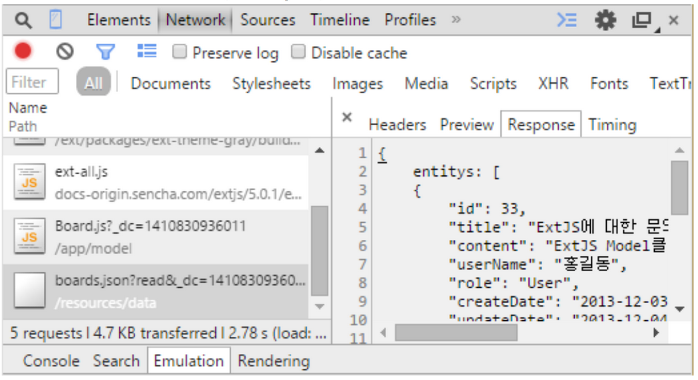

모델클래스는 데이터 패키지 핵심이다. 모델은 컴포넌트가 데이터를 가지기 위한 최소 단위로 RDB(관계형데이터베이스) 테이블과 같은 개념이다. 모델은 데이터를 읽기, 입력, 수정, 삭제 등의 기능을 가지며, 모델간의 관계, 데이터 검증 등을 지원한다.
모델의 정의
모델을 정의하기 위해 Ext.data.Model 클래스를 상속 받고, fields에 데이터를 표현할 name과 type을 명시했다.
name은 RDBMS테이블의 컬럼명과 같으며 서버로 전달한 이름과도 같다. type은 해당 데이터 형식을 말한다. int 뿐만 아니라 string, boolean, date 등이 온다.
Ext.define('ext5.model.Board', {
extend: 'Ext.data.Model',
idProperty: 'id',
fields: [
{
name: 'id',
type: 'int'
},
{
name: 'title',
type: 'string'
},
{
name: 'userName',
type: 'string'
},
{
name: 'role',
type: 'string'
},
{
name: 'content',
type: 'string'
},
{
name: 'createDate',
type: 'date',
dateFormat: 'Y.m.d'
},
{
name: 'updateDate',
type: 'date',
dateFormat: 'Y.m.d'
},
{
name: 'readCnt',
type: 'int'
},
{
name: 'deleteYn',
type: 'boolean',
defaultValue: false
}
]
});모델의 검증
모델 클래스는 데이터를 담는 그릇 역할을 하고 적절한 데이터인지 검증방법을 지원한다. 기존 코드에 데이터 검증 validator를 추가하자.
Ext.define('ext5.model.Board', {
extend: 'Ext.data.Model',
requires: [
'Ext.data.*'
],
fields: [
…
],
validators: {
title: 'presence', // #1
content: {
type: 'length', min: 2, max: 10 //#2
},
deleteYn: {
type: 'inclusion', list: [true, false] // #3
},
role: [
{ type: 'exclusion', list: ['Admin', 'Manager']} // #4
],
userName: {
type: 'format', matcher: /^[ㄱ-힣"'\\{\\}\s]+$/ // #5
}
}
});모델 클래스가 지원하는 검증은 위 코드에서 보듯 다섯 가지가 있다. 1. presence : 필수 입력 필드로 공백을 허용하지 않는다. 값이 채워져 있어야 한다. 2. length : 길이를 검증한다. min은 최소 값, max는 최대 값으로 min과 max 사이에 있어야 한다. 3. inclusion : 포함하는지 검증한다. list에 포함해야 할 값을 여러 개 입력할 수 있다. 4. exclusion : 포함하지 않는지 검증한다. list에 포함하면 안 되는 값을 여러 개 지정한다. 5. format : 정규식을 사용 검증한다. (5)는 한글만 입력할 수 있게 했다.
HTML을 생성하고 위의 모델을 실행한다.
<!DOCTYPE HTML>
<html>
<head>
<meta charset="UTF-8">
<title>Table Layout</title>
<link rel="stylesheet" type="text/css"
href="/ext/packages/ext-theme-gray/build/resources/ext-theme-gray-all-debug.css">
<script type="text/javascript" src="/ext/ext-all-debug.js"></script>
</head>
<body>
<script type="text/javascript">
Ext.Loader.setConfig({
enabled: true,
paths: {
'ext5': '/app'
}
});
Ext.require([
'ext5.model.Board'
]);
Ext.onReady(function () {
var board = Ext.create('ext5.model.Board', {
id: 1,
title: '안녕하세요^^',
userName: '홍길동2',
content: '게시물 내용을 입력합니다.',
role: 'Admin',
readCnt: 300,
deleteYn: false
});
// 생성된 모델을 검증한다.
var errors = board.getValidation();
console.log('오류발견여부 :', errors.dirty);
console.log("오류필드 content:", errors.get('content'));
console.log("오류필드 role:", errors.get('role'));
})
</script>
</body>
</html>
그림 1 validator를 이용한 모델데이터의 검증 결과.
프록시를 이용한 입출력.
모델은 데이터 최전방에 있는 클래스로 스스로 데이터를 관리할 수 있게 서버와 통신
할 수 있는 프록시(proxy)를 가지고 있다. 모델은 RDBMS 테이블과 개념을 같이하고 서버와 통신해 데이터를 입력, 수정, 삭제, 읽기를 지원한다.
기존 Board 모델에 프록시를 추가하자. 프록시는 Ext.data.proxy.Proxy 클래스로 데이터 입출력을 담당하며 각종 통신(Ajax, Rest, JsonP, Direct)을 위한 클래스다.
proxy : {
type : 'ajax',
actionMethods : { // #1
read : 'GET', // #2
create : 'POST', // #3
update : 'POST', // #4
destroy : 'POST' // #5
},
api : { // #6
read : '/resources/data/boards.json?read', // #7
create : '/resources/data/boards.json?create', // #8
update : '/resources/data/boards.json?update', // #9
destroy : '/resources/data/boards.json?destroy' // #10
},
reader : { // #11
type : 'json',
rootProperty : 'entitys'
}
},- actionMethods는 CRUD(create, read, update, destroy) 통신 방식을 설정한다. 통신방식은 GET, POST, PUT, DELETE가 있고 이러한 방식은 주로 RESTful 통신 시 각 액션에 맞게 변경한다.
- 데이터를 로딩할 때는 GET 방식을 사용한다. 3,4. 데이터를 입력하거나 수정할 때는 POST 방식을 사용한다.
- 데이터를 삭제할 때는 DELETE 방식을 사용한다.
- api에는 CRUD 처리를 할 때 필요한 서버의 주소를 명시한다. 7~10. 데이터를 처리하는 데 필요한 서버의 주소다. 주소와 물음표(?)뒤의 매개변수는 개발자가 임의로 지정한 것이다.
- reader는 api의 read 액션을 처리할 때 필요한 설정으로 읽어오는 데이터의 type과 읽어온 데이터가 여러 개일 때 root 설정을 추가할 수 있다.
api가 CRUD 처리를 위한 서버주소를 작성한다. 다음 코드는 서버가 요청을 처리한 이후 클라이언트에서 응답할 메시지를 출력할 뿐이다(서버의 처리 로직은 생략한다). 파일명 : /resources/data/boards.json
{
entitys: [
{
"id": 33,
"title": "ExtJS에 대한 문의",
"content": "ExtJS Model클래스의 Proxy설정에 대해 알아봅니다.",
"userName": "홍길동",
"role": 'User',
"createDate": '2013-12-03',
"updateDate": '2013-12-04',
"readCnt": 230,
"deleteYn": false
}],
success: true
}모델의 준비가 끝났다면 이제 모델 객체를 생성하고 해당 모델을 저장해 보자. 이때 저장은 생성된 모델 객체의 데이터를 서버에 전달하는 과정을 의미한다.
Ext.onReady(function () {
var board = Ext.create('ext5.model.Board', {
title : '안녕하세요^^',
userName : '홍길동',
content: '게시물 내용을 입력합니다.',
role : 'User',
deleteYn: false
});
board.save({ // #1
success: function (record, operation) { // #2
console.log('읽어온 데이터 레코드는 : ', record.data)
},
failure : function(record,options){ // #3
console.log('저장 실패');
},
callback: function(){ // #4
console.log('콜백 처리 ');
}
});
});- 모델의 save메서드를 호출하고 있다. 이 메서드로 모델데이터는 서버에 전달된다.
- 서버와 통신에 성공했을 때 호출된다. 첫 번째 인자는 입력된 모델 객체를 반환하는데, 서버에서 응답해준 데이터가 있다면(boards.json) 응답한 데이터를 모델 객체로 반환하고 서버에서 전달해준 데이터가 없다면(boards.json 내용을 모두 삭제) ExtJS에서 생성한 모델 객체를 그대로 반환한다.
- 서버와 통신에 실패했을 때나 저장 처리 시 의도적으로 실패 했을때 호출된다. boards.json파일 내부의 success: true를 false로 변경하면 인위적으로 실패하게 되고 이 함수가 호출된다.
- ajax 통신이 비동기 통신이므로 순차적인 실행이 어려우므로 콜백 함수를 구현한다. 저장 작업 이후 처리해야 하는 로직을 구현한다.
그림 2은 개발자 도구의 Network 탭에서 서버와의 통신 내역을 확인한 것이다.

그림 2 모델 데이터를 프락시를 통해 저장한다.
save 메서드를 실행한 다음 서버와 통신한 결과를 확인하자. api 설정의 네 가지(CRUD) 중 create를 실행했고(boards.json?create) 이후 서버에 모델 데이터를 전달했다. 그렇다면 save 메서드는 api 중 create에 해당하는 것일까? 꼭 그렇지만은 않다 save() 메서드는 update api에서도 사용한다.
이때 필요한 속성이 idProperty다. idProperty는 데이터를 구분하는 유일한 필드를 설정하는 속성으로 데이터베이스에서 테이블의 기본 키와 같다. 모델에 idProperty를 설정하지 않으면 기본 필드는 id로 설정된다. 이 idProperty 필드의 값이 비어있으면 api의 create가 실행되고, idProperty 필드에 데이터가 포함돼 있으면 update api가 실행된다.
idProperty 속성을 다음과 같이 지정하자. 자동으로 id 필드로 설정되므로 따로 설정할 필요는 없다. 단, id가 아닌 다른 필드로 설정하고자 한다면 모델 클래스에 idProperty를 명시해야 한다. 모델을 생성하는 코드에서 id 필드를 채워 다시 실행하자.
var board = Ext.create('ext5.model.Board', {
id: 1,
title : '안녕하세요^^',
userName : '홍길동',
content: '게시물 내용을 입력합니다.',
role : 'User',
deleteYn: false
});다음 그림 3과 같이 서버에 요청한 url이 boards.json?update..로 update api가 실행 된 것을 확인 할 수 있다. idProperty 설정에 따라 입력과 수정이 결정 됨을 명심하자.

** 그림 3 모델 데이터를 프락시를 통해 수정한다.**
프록시를 이용한 데이터의 읽기 및 삭제
입력과 수정을 알아봤으니 이번에는 데이터를 읽고 삭제하는 기능을 구현해 보자. 다음 코드는 모델클래스의 load메서드를 통해 모델에 채워질 데이터를 얻어오는 코드다.
var board = ext5.model.Board.load(33, { // #1
success: function (record, operation) { // #2
console.log('읽어온 데이터 레코드는 : ', record.data); // #3
}
});- load메서드를 호출하고 있다. 인자에 첫번째는 id값(33)으로 이 값이 서버에 전달돼 원하는 데이터를 찾고 반환해줄 것이다.
- 서버의 요청이 성공하면 success 메서드가 실행된다.
- 서버에서 응답한 데이터(boards.json)를 출력한다.

그림 4 모델을 통한 데이터 읽기
읽기(load)에 성공하면 success 메서드가 실행되고 서버에서 전달받은 데이터를 인자로 전달한다. 전달되는 객체는 모델 객체로 이 객체를 이용해 다시 서버에 update 요청을 할 수 있고 erase 작업을 요청할 수도 있다. 읽기 작업 이후 서버에서 전달받은 모델객체를 이용해 삭제(erase) 작업을 진행 해 보자.
var board = ext5.model.Board.load(33, {
success: function (record, operation) {
console.log('읽어온 데이터 레코드는 : ', record.data)
record.erase({
success: function (record, operation) {
console.log('삭제 후 서버에서 전달한 결과는 : ', record.data)
}
});
}
});삭제에 성공하면 success 메서드가 호출되고 서버의 응답이 있다면 모델 객체로 반환한다.

그림 5 모델에 설정된 프록시를 이용해 모델레코드를 삭제한다.
이렇듯 하나의 데이터를 읽어오고 삭제하는 작업이 간단히 처리할 수 있다. 모델을 이용해 서버에 데이터를 입력하고 입력된 데이터를 읽어와 수정하거나 삭제할 수 있다.